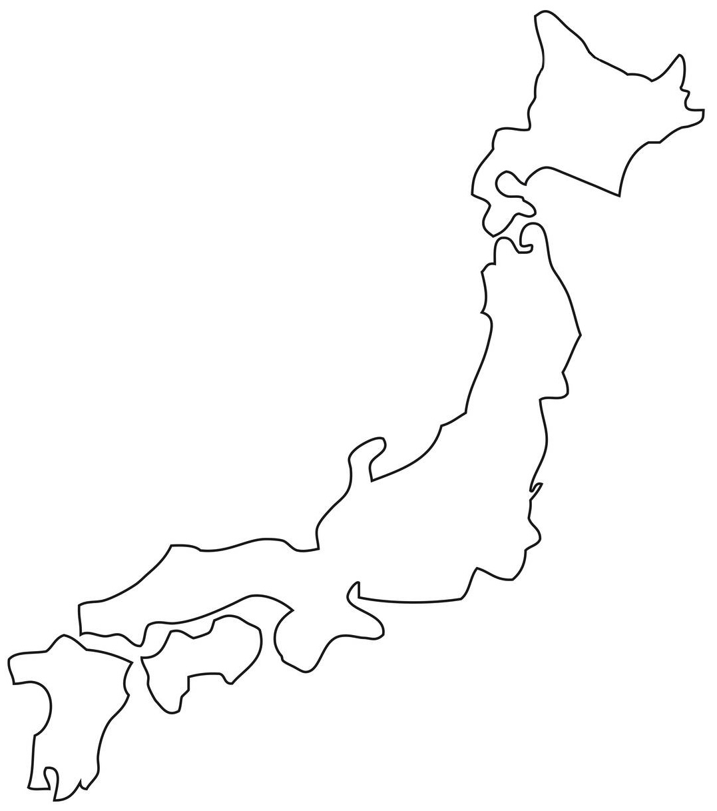

Data Visualisation
Scroll Down
The Economic Burden of an Aging Population
An Interactive Exploration of Demographic Shifts and Healthcare Costs
WHAT IS AN
OLD POPULATION
?
Hello World

Population over 65
Fertility rate
Life expectancy